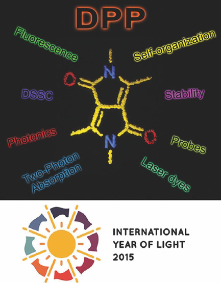

Color Polymorphism and Room Temperature Phosphorescence of 4-Bromo-2,7-Di-Tert-Butyl- 9-Methoxypyrene
Olaf W. Morawski, Jerzy Karpiuk, Marek Grzybowski ChemPhysChem2023, 25, e202400457
DOI: 10.1002/cphc.202400457
Strong Chiroptical Effects in the Absorption and Emission of Macrocycles Based on the 2,5-Diaminoterephthalate Minimal Fluorophore
Krzysztof Nowak, Olaf Morawski, Francesco Zinna, Gennaro Pescitelli, Lorenzo Di Bari, Marcin Górecki, Marek Grzybowski Chem. Eur. J.2023, 29, e202300932
DOI: 10.1002/chem.202300932
Fluorene analogues of xanthenes – low molecular weight near-infrared dyes
Marek Grzybowski, Olaf Morawski, Krzysztof Nowak, Paula Garbacz Chem. Commun.2022, 58, 5455-5458
DOI: 10.1039/D2CC00561A
Tuning the aromatic backbone twist in dipyrrolonaphthyridinediones
Bartłomiej Sadowski, Dominik Mierzwa, Seongsoo Kang, Marek Grzybowski, evgen M. Poronik, Andrzej L. Sobolewski, Dongho Kim, Daniel T. Gryko Chem. Commun.2022, 58, 3697-3700
DOI: 10.1039/D1CC06863F
Synthesis of Tetraaryl-, Pentaaryl-, and Hexaaryl-1,4-dihydropyrrolo[3,2-b]pyrroles
Maciej Krzeszewski, Mariusz Tasior, Marek Grzybowski, Daniel T. Gryko Org. Synth.2021, 98, 242-262
DOI: 10.15227/orgsyn.098.0242
Covalent Self-Labeling of Tagged Proteins with Chemical Fluorescent Dyes in BY-2 Cells and Arabidopsis Seedlings
Ryu J Iwatate, Akira Yoshinari, Noriyoshi Yagi, Marek Grzybowski, Hiroaki Ogasawara, Mako Kamiya, Toru Komatsu, Masayasu Taki, Shigehiro Yamaguchi, Wolf B Frommer, Masayoshi Nakamura Plant Cell2020, 32, 3081-3094
DOI: 10.1105/tpc.20.00439
Method for the Large-Scale Synthesis of Multifunctional 1,4-Dihydro-pyrrolo[3,2-b]pyrroles
Mariusz Tasior, Olena Vakuliuk, Daiki Koga, Beata Koszarna, Krzysztof Górski, Marek Grzybowski, Łukasz Kielesiński, Maciej Krzeszewski, Daniel T. Gryko J. Org. Chem.2020, 85, 13529–13543
DOI: 10.1021/acs.joc.0c01665
Effects of Amino Group Substitution on the Photophysical Properties and Stability of Near-Infrared Fluorescent P-Rhodamines
Marek Grzybowski, Masayasu Taki, Keiji Kajiwara, Shigehiro Yamaguchi Chem. Eur. J.2020, 26, 7912-7917
DOI: 10.1002/chem.202000957
Synthetic Applications of Oxidative Aromatic Coupling—From Biphenols to Nanographenes
Marek Grzybowski, Bartłomiej Sadowski, Holger Butenschön, Daniel T. Gryko Angew. Chem. Int. Ed.2019, 59, 2998-3027
DOI: 10.1002/anie.201904934
A Highly Photostable Near-Infrared Labeling Agent Based on a Phospha-rhodamine for Long-Term and Deep Imaging
Marek Grzybowski, Masayasu Taki, Kieko Senda, Yoshikatsu Sato, Tetsuro Ariyoshi, Yasushi Okada, Ryosuke Kawakami, Takeshi Imamura, Shigehiro Yamaguchi Angew. Chem. Int. Ed.2018, 57, 10137-10141
DOI: 10.1002/anie.201804731
A far-red fluorescent probe based on a phospha-fluorescein scaffold for cytosolic calcium imaging
Hiroaki Ogasawara, Marek Grzybowski, Riho Hosokawa, Yoshikatsu Sato, Masayasu Taki,Shigehiro Yamaguchi Chem. Commun.2018, 54, 299-302
DOI: 10.1039/C7CC07344E
Selective Conversion of P=O-Bridged Rhodamines into P=O-Rhodols: Solvatochromic Near-Infrared Fluorophores
Marek Grzybowski, asayasu Taki, Shigehiro Yamaguchi Chem. Eur. J.2017, 23, 13028-13032
DOI: 10.1002/chem.201703456
π-Expanded Dipyrrolonaphthyridinediones with Large Two-Photon Absorption Cross-Section Values
Bartłomiej Sadowski, Hanayo Kita, Marek Grzybowski, Kenji Kamada, Daniel T. Gryko J. Org. Chem.2017, 82, 7254–7264
DOI: 10.1021/acs.joc.7b00831
Synthesis and optical properties of water-soluble diketopyrrolopyrroles
Marek Grzybowski, Eliza Glodkowska-Mrowka, Guillame Clermont, Mireille Blanchard-Desce, Daniel T. Gryko Chem. Heterocycl. Comp.2017, 53, 72–77
DOI: 10.1007/s10593-017-2023-y
Modulation of Symmetry-Breaking Intramolecular Charge-Transfer Dynamics Assisted by Pendant Side Chains in π-Linkers in Quadrupolar Diketopyrrolopyrrole Derivatives
Woojae Kim, Jooyoung Sung, Marek Grzybowski, Daniel T. Gryko, Dongho Kim J. Chem. Phys. Lett.2016, 7, 3060–3066
DOI: 10.1021/acs.jpclett.6b01248
Z-Shaped Pyrrolo[3,2-b]pyrroles and Their Transformation into π-Expanded Indolo[3,2-b]indoles
Rafał Stężycki, Marek Grzybowski, Guillaume Clermont, Mireille Blanchard-Desce, Daniel T. Gryko Chem. Eur. J.2016, 22, 5198-5203
DOI: 10.1002/chem.201505052
Dipyrrolonaphthyridinediones – structurally unique cross-conjugated dyes
Marek Grzybowski, Irena Deperasińska, Maciej Chotkowski, Marzena Banasiewicz, Artur Makarewicz, Bolesław Kozankiewicz, Daniel T. Gryko Chem. Commun.2016, 52, 5108-5111
DOI: 10.1039/C6CC01017B
Solvatofluorochromic, non-centrosymmetric π-expanded diketopyrrolopyrrole
Marek Grzybowski, Artur Jeżewski, Irena Deperasińska, Daniel H. Friese, Marzena Banasiewicz, Vincent Hugues, Bolesław Kozankiewicz, Mireille Blanchard-Desce, Daniel T. Gryko Org. Biomol. Chem.2016, 14, 2025-2033
DOI: 10.1039/C5OB02583D
Phospha-fluorescein: a red-emissive fluorescein analogue with high photobleaching resistance
Aiko Fukazawa, Shinji Suda, Masayasu Taki, Eriko Yamaguchi, Marek Grzybowski, Yoshikatsu Sato, Tetsuya Higashiyama, Shigehiro Yamaguchi Chem. Commun.2016, 52, 1120-1123
DOI: 10.1039/C5CC09345G
Polar Diketopyrrolopyrrole-Imidazolium Salts as Selective Probes for Staining Mitochondria in Two-Photon Fluorescence Microscopy
Marek Grzybowski, Eliza Glodkowska-Mrowka, Vincent Hugues, Wojciech Brutkowski, Mireille Blanchard-Desce, Daniel T. Gryko Chem. Eur. J.2015, 21, 9101-9110
DOI: 10.1002/chem.201500738
Diketopyrrolopyrroles: Synthesis, Reactivity, and Optical Properties
Marek Grzybowski, Daniel T. Gryko Adv. Opt. Mater.2015, 3, 280-320
DOI: 10.1002/adom.201400559

Hydrogen-bonded diketopyrrolopyrrole (DPP) pigments as organic semiconductors
Eric Daniel Głowacki, Halime Coskun, Martin A. Blood-Forsythe, Uwe Monkowius, Lucia Leonat, Marek Grzybowski, Daniel Gryko, Matthew Schuette White, Alán Aspuru-Guzik, Niyazi Serdar Sariciftci Organic Electronics2014, 15, 3521-3528
DOI: 10.1016/j.orgel.2014.09.038
Two-Photon-Induced Fluorescence in New π-Expanded Diketopyrrolopyrroles
Marek Grzybowski, Vincent Hugues, Mireille Blanchard-Desce, Daniel T. Gryko Chem. Eur. J.2014, 20, 12493-12501
DOI: 10.1002/chem.201402569
Excited-State Dynamics of an Environment-Sensitive Push–Pull Diketopyrrolopyrrole: Major Differences between the Bulk Solution Phase and the Dodecane/Water Interface
Sabine Richert, Sandra Mosquera Vazquez, Marek Grzybowski, Daniel T. Gryko, Alexander Kyrychenko, Eric Vauthey J. Phys. Chem. B2014, 118, 9952–9963
DOI: 10.1021/jp506062j
Comparison of Oxidative Aromatic Coupling and the Scholl Reaction
Marek Grzybowski, Kamil Skonieczny, Holger Butenschön, Daniel T. Gryko Angew. Chem. Int. Ed.2013, 52, 9900-9930
DOI: 10.1002/anie.201210238
Strong two-photon absorption enhancement in a unique bis-porphyrin bearing a diketopyrrolopyrrole unit
Agnieszka Nowak-Król, Marek Grzybowski, Jerzy Romiszewski, Mikhail Drobizhev, Geoffrey Wicks, Maciej Chotkowski, Aleksander Rebane, Ewa Górecka, Daniel T Gryko Chem. Commun.2013, 49, 8368-8370
DOI: 10.1039/C3CC44728F
Bright, Color-Tunable Fluorescent Dyes Based on π-Expanded Diketopyrrolopyrroles
Marek Grzybowski, Eliza Glodkowska-Mrowka, Tomasz Stoklosa, Daniel T Gryko Org. Lett.2012, 14, 2670–2673
DOI: 10.1021/ol300674v


{kind=link}